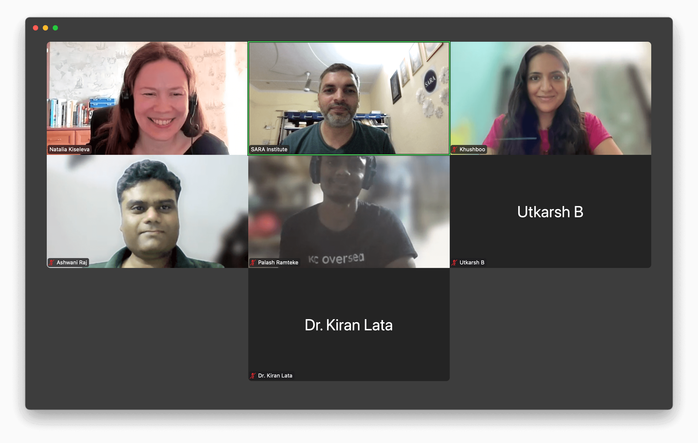

Data Visalization using Excel
A Not-for-profit Fundraising Course

Thank you dear students for attending this course. Session recordings ⤵️
🎯 Course Objectives
Data Visualization Introduction
Data Basics in Excel
Charts in Excel
Data Storytelling in Excel
📅 Schedule & Format
Duration: 4 Hours Total (2 weekends × 2-hour sessions)
Format: Live Online (Zoom) + Hands-on Exercises
Dates:
Session 1: Sat, 5th July 2025, 08:00 PM - 09:00 PM IST
Data Visualization Introduction: In the introduction, you’ll learn about different areas of data visualization and discover why it’s important and how it helps people. We’ll discuss the principles behind how visualization works and get inspired by beautiful examples!Session 2: Sun, 6th July 2025, 08:00 PM - 09:00 PM IST
Data Basics in Excel: Learn how to prepare your data before building charts. Clean messy tables, fix wrong formats, remove duplicates, and arrange your data into a tidy structure ready for visualization.Session 3: Sat, 12th July 2025, 08:00 PM - 09:00 PM IST
Chart Choosing & Charts in Excel: Discover how to pick the right chart for your message. Understand which charts work best for comparisons, trends, parts of a whole, distributions, and relationships in your data. Get hands-on practice creating charts in Excel. Learn how to build bar charts, line charts, pie charts, and more. Customize colors, labels, titles, and styles to make your visuals clear and professional.Session 4: Sun, 13th July 2025, 08:00 PM - 09:00 PM IST
Data Storytelling in Excel: Go beyond charts and turn your data into a story. Learn how to highlight key insights, guide your audience’s attention, and create engaging reports or dashboards that people understand and remember.
💡 Who Should Attend
Students analyzing thesis/research data
NGO workers creating impact reports
Early-career professionals building business presentations
Anyone tired of confusing spreadsheets!
🕊️ Pay-What-You-Can
| Participant Type | Suggested Contribution |
|---|---|
| Professionals | 20 USD |
| NGOs/Govt. Employees | 15 USD |
| Students | 10 USD |
| No one turned away | contribute any amount comfortably. |
📝 How to Join
Register: https://bit.ly/4jZ1ab5
Pay Securely:
- Within India: Use UPI ID
9253152024@sbi
- Outside India: Use Remitly to pay to State Bank of India account number
42920911856.
- Within India: Use UPI ID
Receive: Zoom link within 24 hrs
Deadline: Registrations close on 4th July 2025 or when seats fill!
❓ Contact us
Phone:
Main Office: +91 9253152024
Email:
General & donation inquiries: sara.institute.info@gmail.com